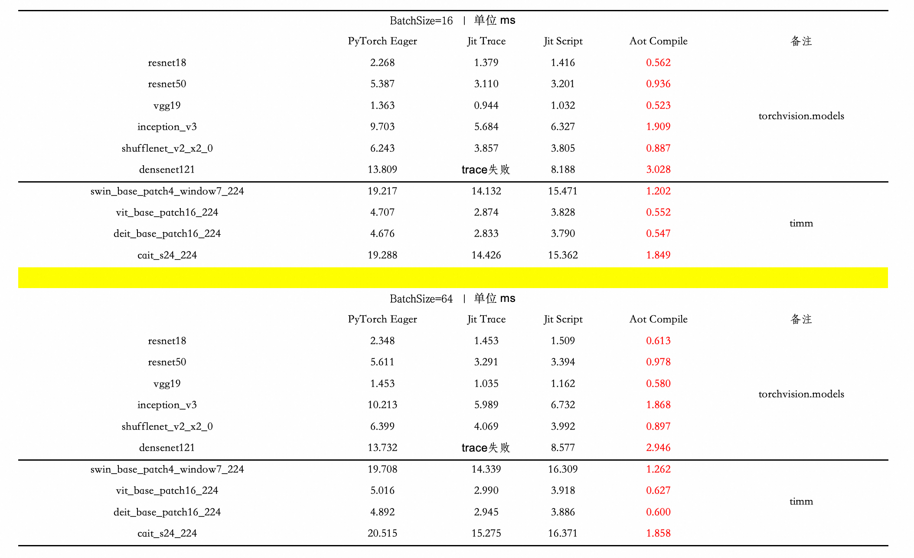
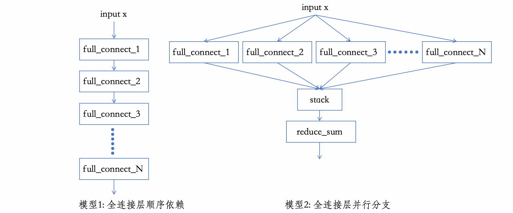
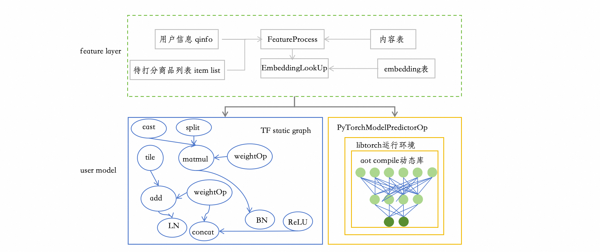
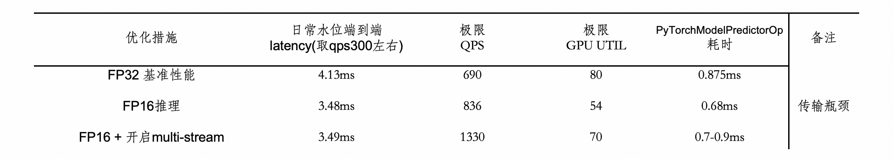
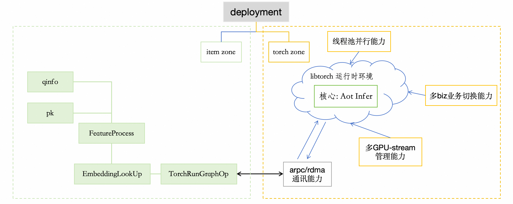
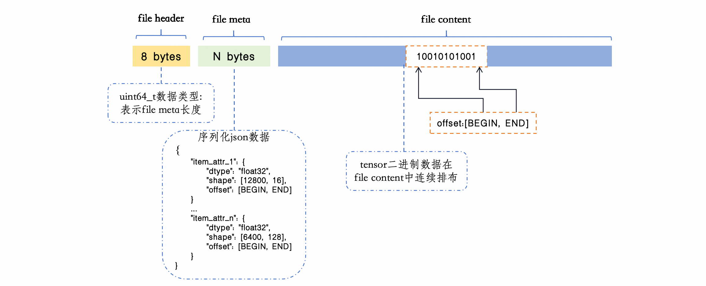

当前RTP精排打分服务对接的搜推模型, 训练和部署几乎都是建立在TensorFlow上的, 整个RTP服务可以认为是运行在一个高度魔改版的TensorFlow 1.X上。经过工程上多年的努力, RTP在这条道路上积累了大量优化经验, 并固化为了基于匹配改进静态图的pattern与对TensorFlow运行时的改进。
算法技术在不断向前发展, 从WDL、DNN、FM再到各种Attention乃至于Transformer, 网络结构上的迭代从未停下脚步。与之相对应的, 深度学习框架也朝着更加易用、高效的方向不断演进。从早期的MXNet、Caffe到TensorFlow 1.X, TensorFlow 2.X, 再到现在风靡的PyTorch。在模型训练领域, PyTorch替代TensorFlow是大势所趋, 当然诸如JAX、OneFlow等更加年轻的挑战者也已经在路上。
基于"工程与算法并行, 为算法提供能力支撑"的朴素想法, RTP团队对于基于PyTorch的搜推模型的部署链路进行了一定的探索。
不同于TensorFlow 1.X同时提供了Python和C++两套runtime, 可以Python上训练保存pb文件, C++上丝滑加载运行。PyTorch从模型保存开始就向Python一边倒。在Python环境下常见有model.state_dict()和torch.save(model, file_path)两种方式。都无法在C++中直接载入运行, 甚至于torch.save这个接口本身也只是对pickle的简单封装。
| 保存pt文件的接口 | model.state_dict() | torch.save(model, file_path) |
|---|---|---|
| 保存的内容 | only weight | 序列化的Python对象 |
| 特性 | 不包含模型结构 | 不能直接在C++中反序列化 |
这跟PyTorch基于动态图的设计理念也有一定关系, 在代码实际运行前, 并不存在一张类似于TF graph.pbtxt的前向反向图。在考虑使用什么框架的阶段, 出于通用性的考虑, RTP没有选择与硬件强绑定的TensorRT和OpenVINO等, 出于尽量贴近原生PyTorch以便减少不兼容风险和最大程度借力于活跃开源社区的考虑, 也否决了ONNX和TVM等框架。最终在TorchScript和AOT compile上进行了对比和抉择。
在PyTorch 1.X时代, Torch官方主推了TorchScript Module作为模型保存的格式, 并支持在C++中载入运行。TorchScript提供了trace和script两种导出torch.nn.Module为TorchScript Module的方式。 trace方法本质上就是在forward过程中记录了一遍对tensor的操作, 更简单直接的理解就是记录了每一次调用的PyTorch的api, 然后形成一张TorchScript graph。script则是把一个nn.Module通过传统的语法树解析编译的形式转换成TorchScript Module。 他们具体怎么做到的并不是本文的重点, 否决掉TorchScript的根本原因在于
以一个简单的包含两个全连接层, 一个BN一个ReLU的小网络为例
class MyModel(nn.Module):
def __init__(self):
super().__init__()
self.fc1 = nn.Linear(128, 32)
self.bn = nn.BatchNorm1d(32)
self.relu = nn.ReLU()
def forward(self, x):
x = self.fc1(x)
x = self.bn(x)
x = self.relu(x)
return x
print(torch.jit.trace(MyModel(), torch.randn(4, 128)).graph)
打印的结果如下, TorchScript只是记录了对libtorch的调用, 与python环境相比, 仅仅是省下了解释器的开销。这个级别的性能优化对于RTP而言是远远不够的。
graph(%self.1 : __torch__.MyModel,
%x : Float(4, 128, strides=[128, 1], requires_grad=0, device=cpu)):
%relu : __torch__.torch.nn.modules.activation.ReLU = prim::GetAttr[name="relu"](%self.1)
%bn : __torch__.torch.nn.modules.batchnorm.BatchNorm1d = prim::GetAttr[name="bn"](%self.1)
%fc1 : __torch__.torch.nn.modules.linear.Linear = prim::GetAttr[name="fc1"](%self.1)
%54 : Tensor = prim::CallMethod[name="forward"](%fc1, %x)
%55 : Tensor = prim::CallMethod[name="forward"](%bn, %54)
%56 : Tensor = prim::CallMethod[name="forward"](%relu, %55)
return (%56)
PyTorch 2.X时代引入了两个重要的基础特性, TorchDynamo和TorchInductor。在此之上, 对外提供了AOT_compile接口, 能够将用户层面的nn.Module通过计算图捕获和编译, 得到一个.so动态库, 在C++中载入动态库即可实现C++环境下的推理。
dynamo用于运行时捕获nn.Module的计算图, 类似于TF里面的静态图。用户代码里面pythonic语句和PyTorch语法大概率是混用的, 例如:
class SimpleModel(nn.Module):
def __init__(self, *args, **kwargs):
super().__init__(*args, **kwargs)
self.fullconnects = nn.ModuleList([nn.Linear(32, 32) for _ in range(3)])
def forward(self, x):
res = []
# assume x.shape[1]=3
for idx in range(x.shape[1]):
res.append(self.fullconnects[idx](x[:, idx]))
return torch.cat(res, dim=1)
这段代码里面, 全连接层运算是PyTorch的语法, 列表操作和循环是python的语法, 尽管这种eager语法为PyTorch的使用带来了巨大的便利, 但是却极大阻碍了模型的部署优化, 毕竟想把所有的python语句都转换为等效的C++语句是几乎不可能完成的事情, 因此从nn.Module提取得到一个干净的PyTorch语法组成的graph是很直觉的想法。
幸运的是, 对于输入Tensor x而言, 一般只有batch size维度是可变的, x.shape[1]在语言层面是动态的, 但是在事实上却是固定的, 例如图像里面一般是通道数3, 搜推里面一般是sequence length, 从部署的视角来看, x.shape[1]更像是一种语法糖的操作。TorchDynamo恰恰在runtime过程中完成了语法糖的固化。经过捕获之后的计算图类似于下面这样:
# 简化了部分取值和转置操作
addmm_default = torch.ops.aten.addmm.default(fullconnects_0_bias, select_int, t_default);
addmm_default_1 = torch.ops.aten.addmm.default(fullconnects_1_bias, select_int_1, t_default_1);
addmm_default_2 = torch.ops.aten.addmm.default(fullconnects_2_bias, select_int_2, t_default_2);
cat_default = torch.ops.aten.cat.default([addmm_default, addmm_default_1, addmm_default_2], 1);
我们知道nn.Linear对应于输入数据和weight先做矩阵乘(Matrix Multiplication, mm), 然后乘法结果与bias之间进行add操作, 因此在图上等于一个addmm乘加算子。图中总计3个addmm操作, 等于通道数, 也就是说dynamo在runtime过程中将python语法糖固化成了hard code, 消除了pythonic的语句。
🙋问题又来了, 等号右边的torch.ops.aten是什么含义呢? PyTorch也是C++写出来, 这部分C++的api被封装在ATen库里面, ATen即是PyTorch的核心, 负责底层张量操作的实现, PyTorch通过pybind11将C++ api暴露给python。我们可以进到site-packages/torch/lib目录下, 下面有libtorch_cpu.so和libtorch_cuda.so两个动态库, 通过"nm -D xxxx.so | grep aten"命令可以查看这两个动态库中的符号, 就能找到这些aten-level的算子。
在python环境下写下的PyTorch语句, 例如"torch.matmul"经过python解释器, 都会最终落到ATen层级的算子上, torch.matmul可能会落到aten.mm_out或者aten.bmm_out上, 在ATen库之下, PyTorch的dispatcher会进一步选择跟具体硬件绑定的后端实现, 例如cuDNN、cuBLAS、MKL和FBGEMM等。
TorchDynamo底层是通过hook python的执行帧来实现的, 与TorchScript把自己定义为一个“小python”不同, TorchDynamo更像是从python代码里面提取一个“clean PyTorch code”。因为这种更加聚焦的设计, TorchDynamo的报错信息远比TorchScript更早更精确。
通过dynamo我们能够得到一张有aten-level op组成的graph, 而另方面aten-level的op都有其的C++实现, 位于libtorch_cpu.so或者libtorch_cuda.so中。很自然的我们想到, 如果把aten-level的操作都写成aten namespace的函数调用, 例如上面那张由3个addmm组成的graph, 写成下面的形式:
// this is a .cpp file
using namespace torch;
at::addmm_out(x, fullconnects_0_bias, select_int, t_default)
at::addmm_out(y, fullconnects_1_bias, select_int_1, t_default_1)
at::addmm_out(z, fullconnects_2_bias, select_int_2, t_default_2)
at::cat_out(cat_default, {x, y, z}, 1)
然后调用gcc或者clang编译, 再跟libtorch_cpu.so或者libtorch_cuda.so链接在一起, 就可以得到一个脱离python runtime的C++可执行文件了。
这就是TorchInductor把graph编译成动态库时, 做的最基础的事情。当然, 如果只是止步于此的话, 那相比于python runtime, 仅仅是节约了解释器的开销。实际上Torch对inductor的定位是一个"编译器", 在背后付出的努力要远比想象的多。例如由于aten算子总计有2000多个, 为了简化code generation并方便硬件厂商的接入, TorchInductor会通过lowing-op将计算图简化到一个约由200+ op组成的子集。随后自动生成高性能的代码来替换部分aten算子。TorchInductor往往使用triton来作为GPU代码的后端, 而在CPU上的代码大量运用openMP和SIMD进行并行化。
例如aten.add + aten.relu这样两个连续的element-wise的情况, TorchInductor会在一个triton函数中合二为一, 生成一个融合的自定义算子, 减小kernel launch和访存开销。
又比如"aten.mm+aten.add+aten.mm"这样一个"矩阵乘+add+矩阵乘"的的情况, TorchInductor可能会生成一个单独的mm_plus_mm算子, 借助于triton的finetune能力以及融合算子在访存和kernel launch上的优化, 在耗时上优于aten。
inductor还可能对计算图进行改写, 例如在PyTorch 2.5.1版本中, inductor会去匹配计算图中的attention结构, 对符合条件的attention结构替换为aten中的flash-attention算子实现
RTP团队从前景和性能两方面考虑, 最终选择AOT compile来实现离线的python模型到C++在线预测的转换。
首先在前景上, PyTorch 2.X主推dynamo和inductor技术, 具有社区强有力的支持。在RTP最初开始探索AOT compile的时候, 使用的PyTorch版本还是2.3.0, 当时inductor仅仅对element-wise的算子进行了融合。时至今日仅仅几个月的时间, PyTorch的版本已经更新到了2.5.1, 在这个版本上, 已经实现了flash-attention算子的匹配, 并且对矩阵乘算子融合也更加激进。并且, 硬件厂商对inductor的支持力度也相当给力, 例如Intel OneDNN量化框架已经对AOT compile进行了支持。
其次, RTP在TF静态图层面的优化上, 积累了大量对计算图进行改写的pattern经验。TorchDynamo能够导出一张与TF相似的计算图, 并且TorchInductor已经运用了图优化进行部分改写, 为我们将来把TF上的经验搬运到Torch上提供了可能性。
最后, TorchInductor选择了triton作为编译GPU代码的后端, triton作为开源社区的产物, 对CUDA、ROCm等后端都提供了支持, 在可适用硬件的层面, 局限性明显小于TensorRT等框架, 同时也为我们将来应用自定义算子铺平了道路。
另一方面, 在性能上, RTP在多个NVIDIA A10开发机上对多个经典网络进行了测试,batch=16 | 64, 在不做任何而外优化的条件下, AOT compile的运行速度明显优于TorchScript, 部分模型上甚至遥遥领先。

确定技术选型之后, 我们很难不去思考, 相比于原来TF那一套耕耘多年的从训练无缝到预测的丝滑小连招, AOT compile这条道路我们得到了什么又失去了什么。
不考虑框架建设和社区支持这些宏观层次, 单纯从执行模型出发。AOT compile之后的PyTorch模型较之TF1.X, 舍弃了计算图拓扑结构带来的并行性, 相对应的节约了一层执行器-算子的抽象。

TF1.X采用“Executor-OP”模型来run一张graph, 我们知道图结构具有拓扑的特性。以下面两张计算图为例, 左图中顺序结构的全连接层full-connect间有依赖关系, Executor执行完fill_connect_1之后才能执行full_connect_2。右图中的分支结构中, 全连接层之间没有依赖性, 只要input_x是ready状态, Executor可以把全部的full_connect op都放到线程池中之行。两张计算图在TF的视角里面是不一样的, TF能够利用图的拓扑特性, 对右图的计算进行加速。
但是对于AOT compile而言, 需要将aten-level的计算图转换为中间的C++代码, 然后编译为动态库。在C++层面是没有graph这个概念的, 只有运算顺序的概念, 因此天然的就舍弃了图的拓扑特性。例如无论是左图还是右图, n个full-connect在中间的C++代码中都类似于下面这样:
fc_1 = at::linear(input_x, weight_1, bias_1)
fc_2 = at::linear(input_x, weight_2, bias_2)
......
fc_n = at::linear(input_x, weight_n, bias_n)
C++代码里并没有graph的概念, 只有被写死的运算顺序关系, 无论fc_1 fc_2之间是否存在依赖, fc_2一定在fc_1结束之后执行。
我们指定图中N=8, full-connect的输入和输出维度都是128, batchsize=32做了简单测试, 结果如下:
| 模型 单位:ms | PyTorch AOT Compile | TensorFlow 1.15 |
|---|---|---|
| 模型1: 全连接层顺序依赖 | 0.171 | 0.290 |
| 模型2: 全连接层并行分支 | 0.185 | 0.205 |
由于TF比AOT compile多了把数据从CPU搬运到GPU上的开销, 并且模型结构非常简单, 因此仅需关注顺序和分支结构执行时间的相对数值, 绝对数值没什么特别大的意义。在PyTorch AOT Compile中, 顺序结构执行更快(分支结构多了一次reduce_sum); TF中恰恰相反, OP并行带来的收益要多于一次reduce_sum, 当网络中存在更多小算子时, 这种并行能力的优势还能进一步被放大。
抽象是有成本的, AOT compile节约了“Executor-OP”抽象成本, 但是也舍弃了图拓扑特性, 一增一减。我们使用PyTorch复刻了线上一个基于TF的典型的搜推模型, 经过一定优化后, AOT compile之后的Torch模型的latency和线上模型几乎一致。并且随着attention结构风靡造成的单个算子越来越大, 以及算子融合把小算子合并成大算子, 我们可以畅想在未来一天, AOT compile的推理表现还可以再进一步。
RTP支持的搜推模型, 在线过程一般包含特征层(feature layer)和用户模型(user model)两部分。
feature layer一般是根据输入的用户和商品原始数据, 处理之后查询内容表得到embedding, 然后对部分embedding进行concat得到sequence feature的过程, 简而言之即ready好user model所需的输入。这部分的逻辑一般在CPU上运行, 具体逻辑由大量自定义的TensorFlow算子组成。而user model就是深度神经网络部分了。
在既往的RTP框架中, 一般离线会交付一张主要由user model组成的的graph.pbtxt, 与表示所需特征的fg.json文件。RTP在线过程中, 首先会根据fg.json的内容, 将自定义的TF特征处理算子, 例如embeddingLookup、denseToSparse等, 拼接到graph.pbtxt上, 然后对这张graph.pbtxt进行改写之后, 发送到TF上进行执行。
PyTorch在线预测是针对user model部分, 对于feature layer, 由于大量TF自定义算子的存在, 短期内没必要且也不可能另起炉灶。因此整体上, 我们维持feature layer与旧有框架保持一致, 并将AOT compile得到的动态库的推理过程进行封装, 将其和其依赖的libtorch环境以自定义TensorFlow算子(称之为PyTorchModelPredictorOp)的形式添加到RTP框架中。
模型表的处理逻辑主要改动之处在于:
现在并没有一张预先存在的graph.pbtxt文件, 因此模型表处理过程需要从fg.json起, 裸拼出一张表示feature layer逻辑的TF静态图。然后把PyTorchModelPredictorOp和output节点拼接上去。
PyTorch图优化和编译得到动态库的过程也放在模型表处理中完成, 由于动态库的目标平台一般是GPU, 需要对应的CUDA工具或ROCm工具对生成的GPU后端代码进行编译, 因此需要管控指定模型表在有GPU的平台上进行构建。

PyTorchModelPredictorOp在设计上是一个自定义的TensorFlow算子, 在Compute函数内部, 通过零拷贝将tensorflow::Tensor类型的input_tensor转换为at::tensor。之后的运算过程由PyTorch接管, 在libtorch环境下调用编译好的动态库进行推理。推理结束之后通过内存拷贝将at::tensor填充到tensorflow::Tensor中。
PyTorch预测链路优化还处在起步的阶段, RTP团队针对性的实现和应用了部分通用且广谱的优化措施。主要包括fp16半精度推理、multi-stream和拉远, 叠加上TorchInductor自身的算子替换和算子融合, 在实验的一个小的推荐模型上已经取得了可见的效果。

将编译得到的动态库连同libtorch运行环境, 以一个TensorFlow OP的形式添加到RTP框架中, 尽管可以很自然地和旧有框架整合到一起, 但很明显的, 从tensorflow::tensor拷贝到at::tensor开始, 运算过程就交由Torch接管, 等Torch运算完成, TF再度负责后续过程, TF和Torch之间是隔离开的, 逻辑上并没有耦合在一起的必要。并且这种耦合可能也会影响将来的升级。例如TF和PyTorch依赖的CUDA新旧版本可能不一致。

为此, 我们希望后续借鉴拉远的设计, 将deployment分为item zone和torch zone, 以此实现TF和Torch之间的解耦。
在RTP在线过程中, 为了支持embedding与weights的动态更新, 我们习惯于将这两种数据构建成kv表的形式存储, 从而可以直接利用build service&indexlib提供的实时更新能力。为了与build service对接, RTP测需要提供逐条读取"tensorName-tensorValue键值对"的C++接口。
在TF1.X中, 训练结束后, 权重会被保存为protobuf格式的.meta、.data和.index文件, C++的TF提供了CheckpointReader类用于逐条读取权重, 屏蔽了底层文件的存储细节, 为我们实现适配build service服务的TFCheckpoint Reader提供了很大的便利。
然而在PyTorch模型训练过程中, 用户一般习惯使用torch.save()和model.state_dict()来保存权重, 形如下面这样:
torch.save(model.state_dict(), "model.pth")
model.state_dict()返回的是一个python字典对象, torch.save则更是对pickle.dump的封装, 将字典对象进行序列化。站在RTP的角度, 且不说在C++中去解析一个python对象听着就不靠谱, 并且对于搜推模型大则超过几百GB的权重文件, 一次性将文件作为python对象载入内存, 机器也扛不住。再者, Torch本身并未提供一个屏蔽底层文件存储细节的reader工具。
为此, RTP团队经过调研后, 从离线训练和在线读取两边的适配成本考虑, 选择SafeTensors作为PyTorch权重文件的保存格式。
在训练侧, 借助Huggingface提供的包可以很方便的把PyTorch的"tensorName-tensorValue"键值对保存为SafeTensors格式权重, 改造成本非常小:
import torch
import safetensors
# 创建示例张量
arr = torch.randn(3, 4, dtype=torch.float32)
# 创建字典
tensors = {"arr": arr}
# 保存SafeTensors格式
safetensors.torch.save_file(tensors, "model.safetensors")
SafeTensors文件具有确定的二进制格式:

RTP根据SafeTensors固定的格式排列, 并借助于TRE应用编排&系统服务团队提供的fuse映射dfs文件到本地的能力, 实现了一套读取multi-shard SafeTensors权重文件的PyTorchCheckpoint Reader, 并与build service服务对接。
在TF链路上, 离线在线之间交付的产物非常清晰:
但是在Torch预测链路上, 由于PyTorch从设计初始就完全向动态和易用妥协, 默认保存的文件都是序列化的python对象, 并没有如此丝滑干净的交付产物。对于交付产物我们的期待非常明确：
经过调研, RTP团队决定将TorchDynamo导出的graph作为在离线之间交付的产物。代码实现层面, 首先通过torch.export导出graph, 然后通过torch.fx.symbolic_trace将graph保存为torch.fx.GraphModule格式, 其中GraphModule是nn.Module的一个子类, 提供了可视化code和graph的功能。产出交付产物的核心逻辑类似如下:
# torch.export得到aten-level graph
new_model = torch.export.export(model, args, kwargs)
# 转换为torch.fx.GraphModule格式
fx_graph_module = torch.fx.symbolic_trace(new_model.module())
print(fx_graph_module.graph)
# 保存为文本形式
fx_graph_module.to_folder('xxx', 'yyy')
上述代码打印的graph如下:
graph():
%x : [num_users=4] = placeholder[target=x]
%sym_size_int : [num_users=6] = call_function[target=torch.ops.aten.sym_size.int](args = (%x, 0), kwargs = {})
%mul : [num_users=1] = call_function[target=operator.mul](args = (%sym_size_int, 3), kwargs = {})
%view_default : [num_users=1] = call_function[target=torch.ops.aten.view.default](args = (%x, [%mul, 128]), kwargs = {})
%t_default : [num_users=1] = call_function[target=torch.ops.aten.t.default](args = (%user_model_fc_list_0_weight,), kwargs = {})
%addmm_default : [num_users=1] = call_function[target=torch.ops.aten.addmm.default](args = (%user_model_fc_list_0_bias, %view_default, %t_default), kwargs = {})
%view_default_1 : [num_users=1] = call_function[target=torch.ops.aten.view.default](args = (%addmm_default, [%sym_size_int, 3, 16]), kwargs = {})
%relu_default : [num_users=1] = call_function[target=torch.ops.aten.relu.default](args = (%view_default_1,), kwargs = {})
%mul_1 : [num_users=1] = call_function[target=operator.mul](args = (%sym_size_int, 3), kwargs = {})
......
保存TorchDynamo导出的graph相对于直接交付工程文件或序列化nn.Module的优势非常明显:
RTP团队将借助TorchDynamo导出graph的逻辑封装到一个类内, 离线同学从gitlab拉取代码, 在Rank 0机器上执行即可获取该产物, 对训练的影响和改造成本相对而言较小。
PyTorch在最初的设计上就向"快速搭建网络"的目标倾斜, 从占用率角度来看, 这种易用性上的优势帮助PyTorch在学术界取得了摧枯拉朽式的成功。而在另一个角度, 向Python的无限靠拢, 也trade-off了在工程上的应用。时至今日, 关于PyTorch模型应该怎么部署的问题上, 依旧没有一个相对收敛的方案。有借助第三方框架的TensorRT、onnx和OpenVINO等, 也有直接使用Python runtime的方案, 还有面向移动端的QNNPACK等。当然还有一些不那么原生的方法, 例如借助onnx把PyTorch模型转换为TensorFlow模型, 很长一段时间还有着"PyTorch占领学术界, TensorFlow占领工业界"的说法。
随着PyTorch 2.X的推出, PyTorch官方也认识到了自身在部署层面的不足, 发布了TorchDynamo、TorchInductor等重磅模块, 在此基础上推出了torch.compile, AOT compile等更加静态更加原生的特性。
在探索PyTorch模型部署的道路上, RTP团队出于"极致性能、贴近原生、面向未来"的立足点, 经过充分调研和对比测试, 确定了基于AOT compile这一条更新颖更激进的部署方案:
目前我们在小规模测试集群上, 对小量业务模型进行了测试, 在性能上能取得相近于TensorFlow的效果, 迈出了第一步。当然这套方案远未达到尽善尽美的层次, 例如对于Python这种百变金刚一样的动态语言, TorchDynamo势必不可能面面俱到, 用户代码依旧需要遵循一定的编码规则。展望未来, 希望随着PyTorch在集团业务上的铺广使用, 我们探索的这条部署路径能有更广大的应用空间, 并在使用中臻于完善, 为算法提供更坚实的支持。